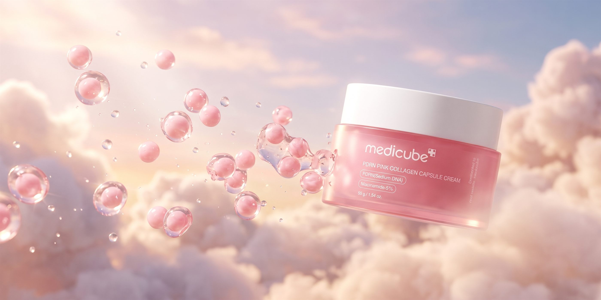
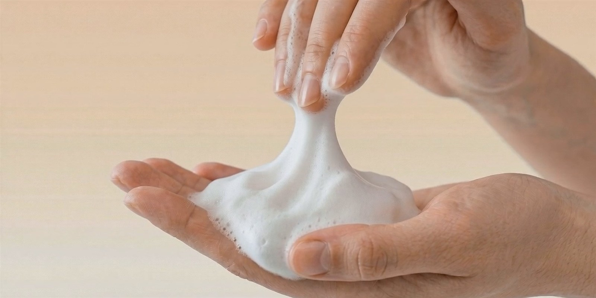
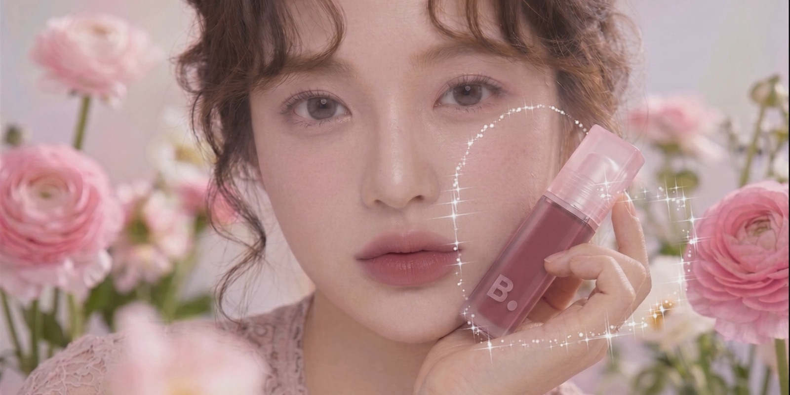
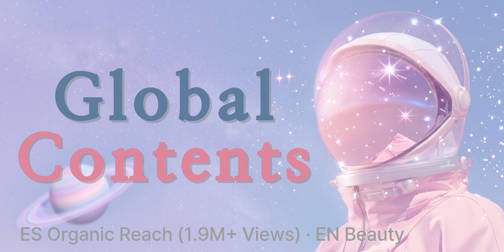
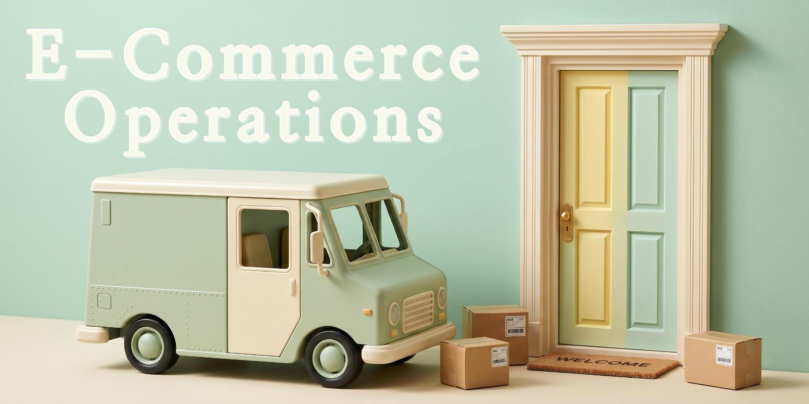

자세히 보기View Details→
① Beauty Visual & AI Direction
AI Editorial, Banner & Poster
브랜드별 콘셉트와 제품의 특징을 분석하고, 각기 다른 비주얼 전략을 AI 이미지로 구현했습니다.
Analyzing each brand's concept and product character, then translating them into distinct visual strategies through AI imagery.

자세히 보기View Details→
② Team Video Production
Team Video Projects
AI 생성부터 실사 촬영·편집까지 폭넓게 다룬 팀 영상 프로젝트로, 제품 홍보 광고·브이로그·동두천 공모전 영상의 기획·촬영·AI 연출·편집을 수행했습니다.
AI-produced ad films built from each product's key selling point — covering concept planning, AI scene generation, narration, motion graphics, and final edit in a team project.

자세히 보기View Details→
③ Personal Video Production
Personal Video Projects
직접 기획·제작한 개인 AI 광고 영상과 지자체 홍보 영상, 상업 영상입니다. 각기 다른 무드로 연출한 AI 광고부터 우수상을 수상한 군포시 홍보 숏폼, 클라이언트가 최종 채택한 상업 영상까지 담았습니다.
A collection of self-produced AI ad films, local government promos, and commercial videos — AI ads in distinct moods, an award-winning Gunpo City promo short, and commercial videos adopted by clients.

자세히 보기View Details→
④ Content Marketing
TikTok Channel Growth
스페인어권 시청자를 겨냥한 한국 라이프스타일 틱톡 채널(TikTok ES)을 운영하며 팔로워 10.5K, 누적 좋아요 78.6K, 단일 게시물 최고 조회수 91만 회를 기록했습니다.
글로벌 타깃을 사로잡은 숏폼 기획·편집 노하우를 바탕으로, 현재는 영어권 채널(TikTok US · Instagram EN)까지 영역을 확장해 K-뷰티 콘텐츠를 제작·운영하고 있습니다.
Ran a Korean-lifestyle TikTok channel for Spanish-speaking audiences (TikTok ES), reaching 10.5K followers, 78.6K total likes, and 910K views on a single post. Building on that short-form planning and editing expertise, I'm now expanding into English-language channels (TikTok US · Instagram EN) to produce and run K-beauty content.

자세히 보기View Details→
⑤ Coupang & Naver Smart Store
Commerce Brand Operations
쿠팡과 네이버 스마트스토어에서 브랜드 골프복의 상품 등록부터 옵션·대표 썸네일 세팅, 상세페이지 구성까지 오픈마켓의 실제 판매 페이지 구축 과정을 경험했습니다.
Built real product pages on Coupang and Naver Smart Store for a golf apparel brand — from product listing and option/thumbnail setup to full detail-page composition.